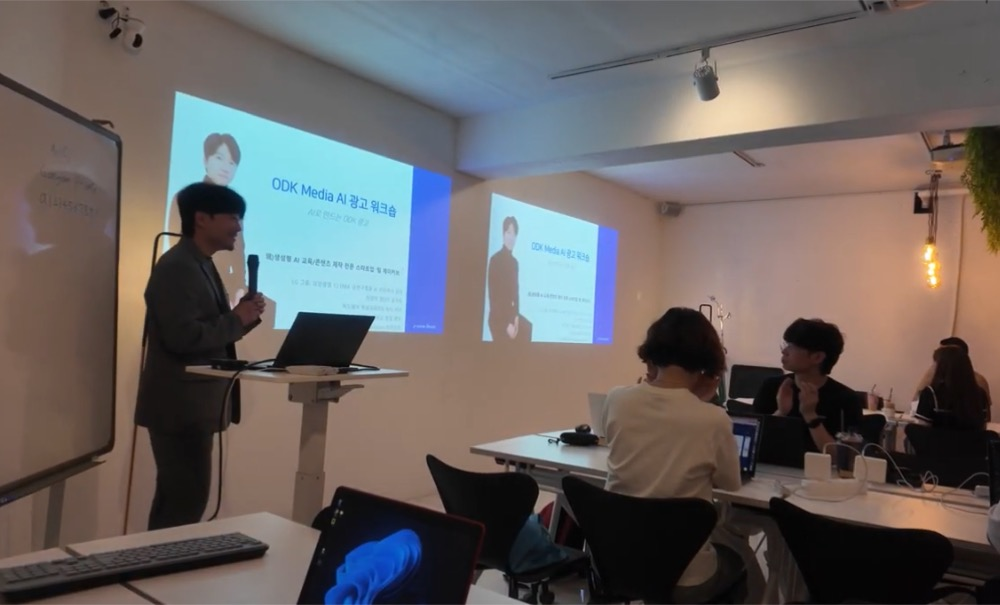
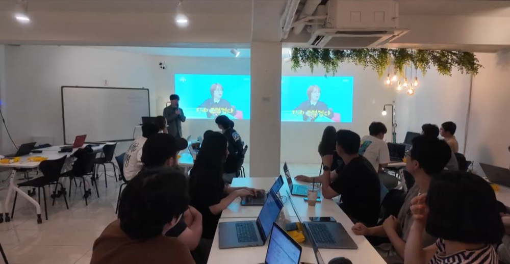
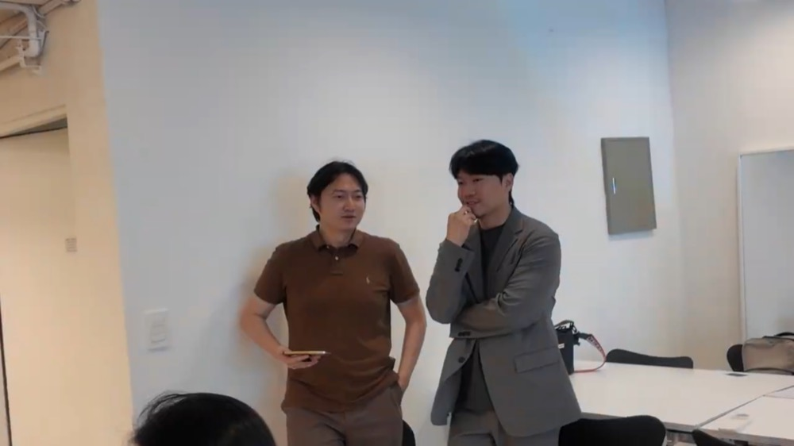
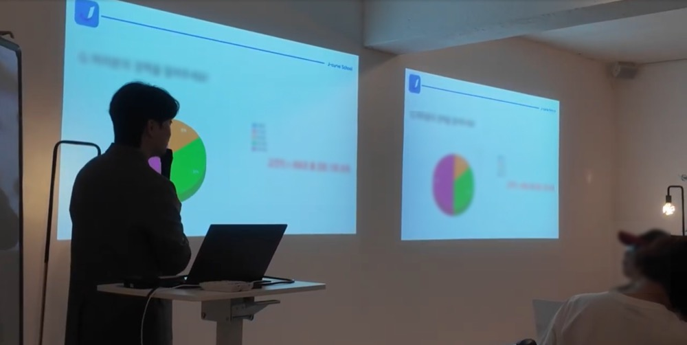
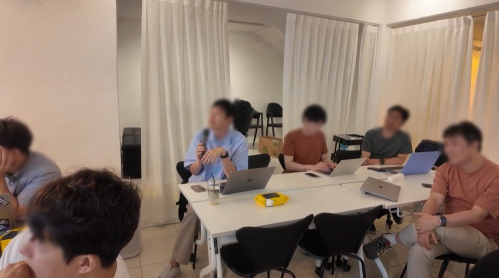
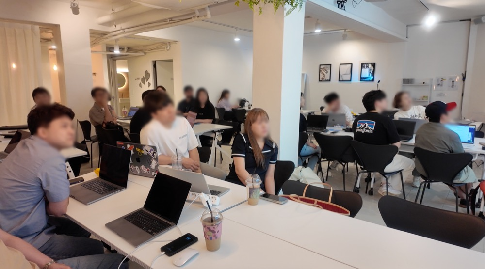
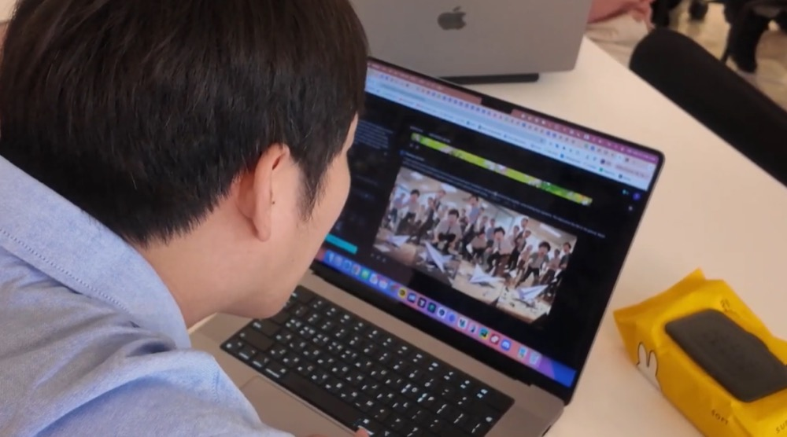
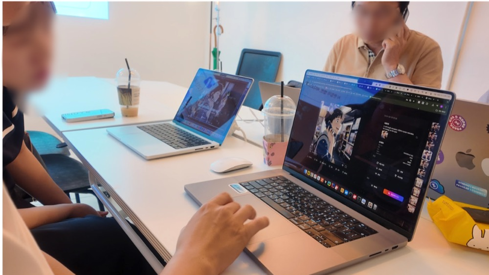
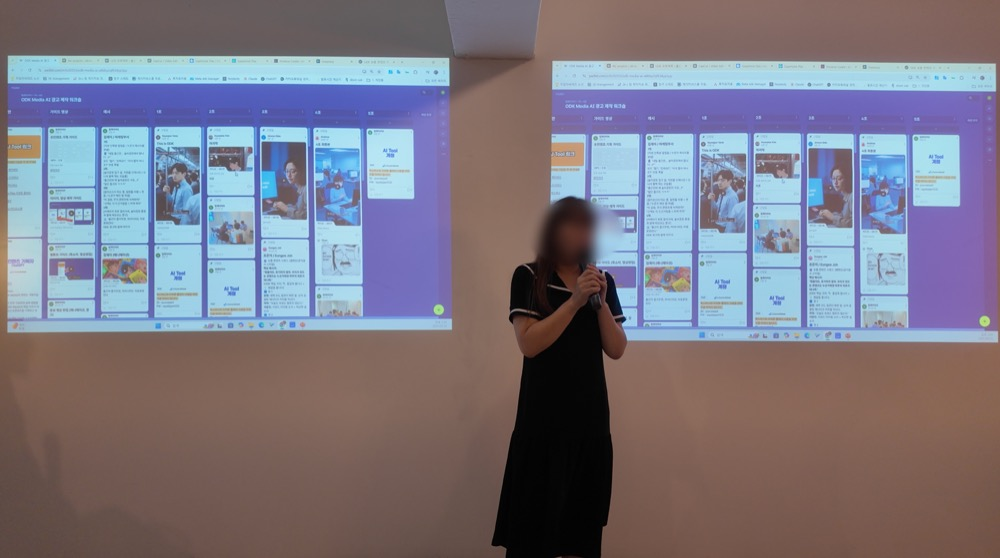
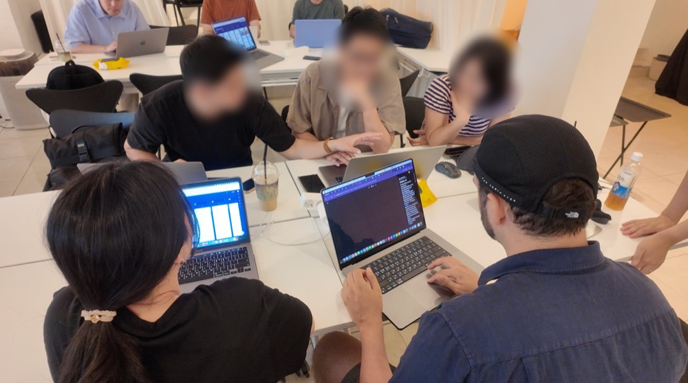

ODK 미디어 한국지사와 함께한 AI 숏폼 캠페인 제작 워크숍!
기획부터 촬영·편집까지 직접 해보는 3시간 집중형 AK AI RISE 실습 기록
| <개요> - 프로그램명: ODK Media AI 캠페인 영상 제작 워크숍
- 일시: 2025. 06. 18(수) 13:30–16:30
- 장소: 신논현역 근처 ‘강남 프라이빗’ 공간
- 대상: ODK 미디어 한국지사 임직원 20명
|
|
안녕하세요, 팀 제이커브입니다.
업무 방식은 점점 더 빠르게 바뀌고 있습니다.
특히 콘텐츠 산업에서는 AI로 인해 누구나 ‘창작자’가 될 수 있는 시대가 열리고 있죠.

이번에는 팀 제이커브 주관 AI 숏폼 공모전을 후원해 주신 ODK Media에 AI 워크숍을 제공했습니다.
한국지사 직원들이 직접 AI를 활용해 숏폼 광고 캠페인을 기획하고 제작해보는 실습 중심의 프로그램이었어요.
단 3시간, 단 1회지만 기획부터 편집까지 전 과정을 직접 체험하며‘AI와 협업하는 콘텐츠 제작 방식’을 익히는 데 집중했습니다.
ODK 팀원들이 직접 만든 AI 숏폼 콘텐츠 제작 현장, 지금부터 함께 살펴보시죠.
준비 단계
보다 쾌적한 진행을 위해 신논현역 인근 ‘강남 프라이빗’ 공간을 대여해 워크숍을 운영했습니다.
약 25명이 한 공간에 모였지만 좌석 간 간격이 넉넉해 몰입도가 높았고, 프로젝터가 2대 설치되어 있어서 발표와 실습을 병행하기에도 효율적이었습니다.

아무래도 워크숍으로 준비된 장소는 아니었기 때문에 팀제이커브에서는 한 시간 전에 도착해서 워크숍 현장 준비를 마무리 했는데요.
이미 깨끗하게 관리가 잘 되어 있어서 많은 준비를 할 필요는 없었습니다.
그럼 이제 워크숍을 시작해 볼까요!
아이스브레이킹: 우리 회사 AI 구별왕!

시작은 가볍게 사전 설문을 바탕으로 ODK Media의 AI 활용 현황을 공유하며, 자연스럽게 AI에 대한 관심도를 이야기했습니다.
이 과정을 통해 참가자들이 AI를 '내 일'로 연결해 생각할 수 있도록 유도하게 되는 거죠.

이어서 AI와 친해지기 위해 AI 퀴즈를 진행하며 분위기를 풀었는데요.
AI가 만든 이미지와 사람이 만든 이미지를 구별하거나, AI 성우 vs 실제 목소리를 듣고 맞히는 미션을 통해 AI 인식 감각을 테스트했습니다.
재미와 몰입을 동시에 잡으며 다음 세션으로 자연스럽게 이어졌습니다.
세션 1: 지금 이 순간에도 진화하는 AI
첫 세션에서는 AI 기술의 현재 수준과 가능성을 직접 확인했습니다.
- AI로 제작된 광고 사례 (LG그램 등)
- 디자인·기획·모델링을 넘나드는 AI 활용 방식
단순히 “대단하다”에서 끝나는 것이 아니라 내 업무와 연결되면 어떤 변화가 생길까?라는 질문을 남기는 시간.
참가자들이 본격적인 기획에 들어가기 전, AI를 대하는 관점을 바꾸는 세션이었습니다.
세션 2: 우리만의 ODK AI 콘텐츠 만들기
이제는 직접 만들어보는 시간입니다.
각 참가자는 AI 작가가 되어 ODK 브랜드를 주제로 한 숏폼 콘텐츠를 기획하고 제작했습니다.

챗GPT로 스토리를 짜고, AI 성우와 촬영 도구를 활용해 영상 제작까지, 실제 캠페인처럼 역할을 분담해 콘텐츠를 완성했습니다.
툴을 익히는 데 집중하기보다, “팀으로 AI를 활용하는 방식”을 자연스럽게 익힐 수 있었습니다.
세션 3: 팀별 제작 및 발표
마지막 세션에서는 각 팀이 완성한 콘텐츠를 발표했습니다.
기획–제작–편집 전 과정을 팀별로 수행한 결과물은 각자의 개성과 메시지가 살아 있었는데요.
ODK Media 부사장님도 함께 자리해 주셨고, 우수팀에게는 현장에서 깜짝 선물도 전달되었습니다.
짧은 시간이었지만 브랜드 캠페인과 유사한 제작 흐름을 따라가며,AI와 협업하는 감각을 체득하는 시간이었습니다.
워크숍 말미에는 부사장님의 격려사도 이어졌는데, AI 콘텐츠 도입에 대한 응원과 기대를 나누며 마무리되었습니다.
마무리 & 다음 단계
짧은 3시간이었지만, ODK Media 한국지사 직원들은 그 안에 많은 경험을 했습니다.
기획부터 제작, 편집까지 —실제 캠페인 제작을 AI로 완성해보게 되었죠.
단순히 도구를 익히는 데 그치지 않고 “어떻게 활용할 것인가”에 대한 실전 감각을 익힌 경험,
제이커브스쿨은 앞으로도 이런 경험을 더 많은 팀과 나누기 위해한국을 넘어 글로벌로, AI 실습형 워크숍을 지속적으로 확장하고 있습니다.
AI는 이미 일을 바꾸고 있습니다.
이제는 ‘모르는 사람’이 아니라, ‘못 쓰는 사람’이 뒤처지는 시대가 되어버렸어요.
제이커브스쿨은 조직이 AI에 휘둘리지 않고,주도적으로 활용할 수 있도록 돕는 실전형 교육팀입니다.콘텐츠, 마케팅, 기획까지.
지금 여러분의 팀에 필요한AI 실습형 워크숍을 설계합니다.
ODK 미디어 한국지사와 함께한 AI 숏폼 캠페인 제작 워크숍!
기획부터 촬영·편집까지 직접 해보는 3시간 집중형 AK AI RISE 실습 기록
<개요>
안녕하세요, 팀 제이커브입니다.
업무 방식은 점점 더 빠르게 바뀌고 있습니다.
특히 콘텐츠 산업에서는 AI로 인해 누구나 ‘창작자’가 될 수 있는 시대가 열리고 있죠.

이번에는 팀 제이커브 주관 AI 숏폼 공모전을 후원해 주신 ODK Media에 AI 워크숍을 제공했습니다.
한국지사 직원들이 직접 AI를 활용해 숏폼 광고 캠페인을 기획하고 제작해보는 실습 중심의 프로그램이었어요.
단 3시간, 단 1회지만 기획부터 편집까지 전 과정을 직접 체험하며‘AI와 협업하는 콘텐츠 제작 방식’을 익히는 데 집중했습니다.
ODK 팀원들이 직접 만든 AI 숏폼 콘텐츠 제작 현장, 지금부터 함께 살펴보시죠.
준비 단계

보다 쾌적한 진행을 위해 신논현역 인근 ‘강남 프라이빗’ 공간을 대여해 워크숍을 운영했습니다.
약 25명이 한 공간에 모였지만 좌석 간 간격이 넉넉해 몰입도가 높았고, 프로젝터가 2대 설치되어 있어서 발표와 실습을 병행하기에도 효율적이었습니다.

아무래도 워크숍으로 준비된 장소는 아니었기 때문에 팀제이커브에서는 한 시간 전에 도착해서 워크숍 현장 준비를 마무리 했는데요.
이미 깨끗하게 관리가 잘 되어 있어서 많은 준비를 할 필요는 없었습니다.
그럼 이제 워크숍을 시작해 볼까요!
아이스브레이킹: 우리 회사 AI 구별왕!

시작은 가볍게 사전 설문을 바탕으로 ODK Media의 AI 활용 현황을 공유하며, 자연스럽게 AI에 대한 관심도를 이야기했습니다.이 과정을 통해 참가자들이 AI를 '내 일'로 연결해 생각할 수 있도록 유도하게 되는 거죠.

이어서 AI와 친해지기 위해 AI 퀴즈를 진행하며 분위기를 풀었는데요.AI가 만든 이미지와 사람이 만든 이미지를 구별하거나, AI 성우 vs 실제 목소리를 듣고 맞히는 미션을 통해 AI 인식 감각을 테스트했습니다.
재미와 몰입을 동시에 잡으며 다음 세션으로 자연스럽게 이어졌습니다.
세션 1: 지금 이 순간에도 진화하는 AI

첫 세션에서는 AI 기술의 현재 수준과 가능성을 직접 확인했습니다.
단순히 “대단하다”에서 끝나는 것이 아니라 내 업무와 연결되면 어떤 변화가 생길까?라는 질문을 남기는 시간.
참가자들이 본격적인 기획에 들어가기 전, AI를 대하는 관점을 바꾸는 세션이었습니다.
세션 2: 우리만의 ODK AI 콘텐츠 만들기

이제는 직접 만들어보는 시간입니다.
각 참가자는 AI 작가가 되어 ODK 브랜드를 주제로 한 숏폼 콘텐츠를 기획하고 제작했습니다.

챗GPT로 스토리를 짜고, AI 성우와 촬영 도구를 활용해 영상 제작까지, 실제 캠페인처럼 역할을 분담해 콘텐츠를 완성했습니다.
툴을 익히는 데 집중하기보다, “팀으로 AI를 활용하는 방식”을 자연스럽게 익힐 수 있었습니다.
세션 3: 팀별 제작 및 발표

마지막 세션에서는 각 팀이 완성한 콘텐츠를 발표했습니다.
기획–제작–편집 전 과정을 팀별로 수행한 결과물은 각자의 개성과 메시지가 살아 있었는데요.
ODK Media 부사장님도 함께 자리해 주셨고, 우수팀에게는 현장에서 깜짝 선물도 전달되었습니다.
짧은 시간이었지만 브랜드 캠페인과 유사한 제작 흐름을 따라가며,AI와 협업하는 감각을 체득하는 시간이었습니다.
워크숍 말미에는 부사장님의 격려사도 이어졌는데, AI 콘텐츠 도입에 대한 응원과 기대를 나누며 마무리되었습니다.
마무리 & 다음 단계

짧은 3시간이었지만, ODK Media 한국지사 직원들은 그 안에 많은 경험을 했습니다.
기획부터 제작, 편집까지 —실제 캠페인 제작을 AI로 완성해보게 되었죠.
단순히 도구를 익히는 데 그치지 않고 “어떻게 활용할 것인가”에 대한 실전 감각을 익힌 경험,
제이커브스쿨은 앞으로도 이런 경험을 더 많은 팀과 나누기 위해한국을 넘어 글로벌로, AI 실습형 워크숍을 지속적으로 확장하고 있습니다.
AI는 이미 일을 바꾸고 있습니다.
이제는 ‘모르는 사람’이 아니라, ‘못 쓰는 사람’이 뒤처지는 시대가 되어버렸어요.
제이커브스쿨은 조직이 AI에 휘둘리지 않고,주도적으로 활용할 수 있도록 돕는 실전형 교육팀입니다.콘텐츠, 마케팅, 기획까지.
지금 여러분의 팀에 필요한AI 실습형 워크숍을 설계합니다.
👉 AI로 일 잘하는 법, 지금 무료 상담하기